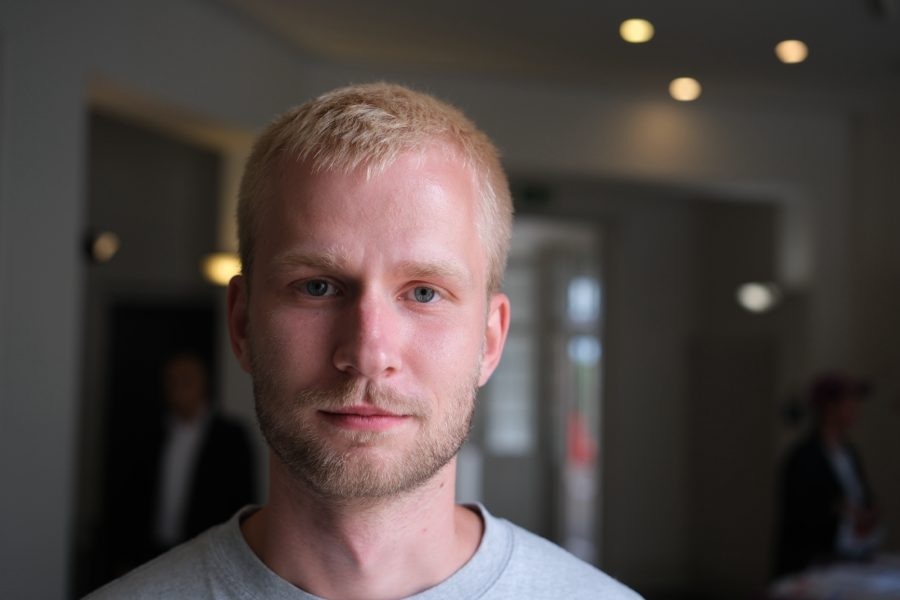
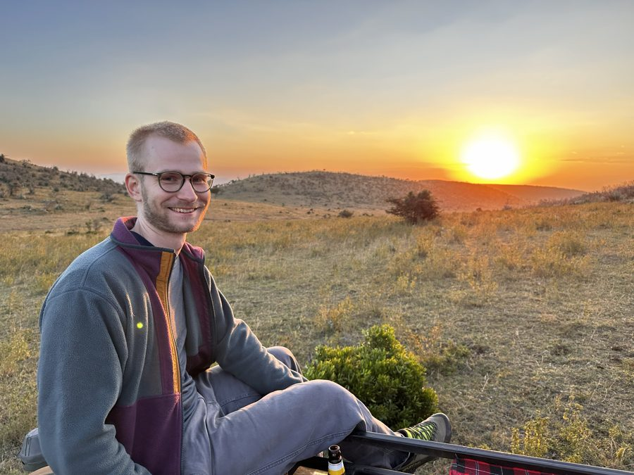
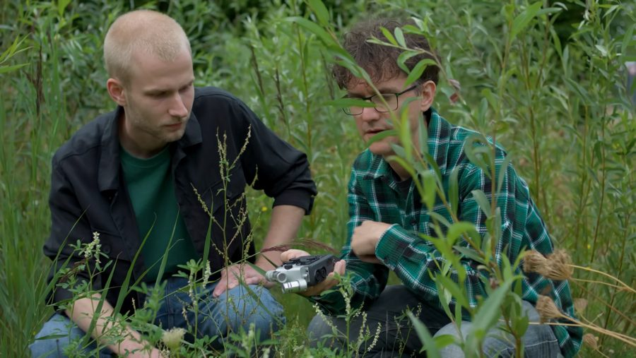
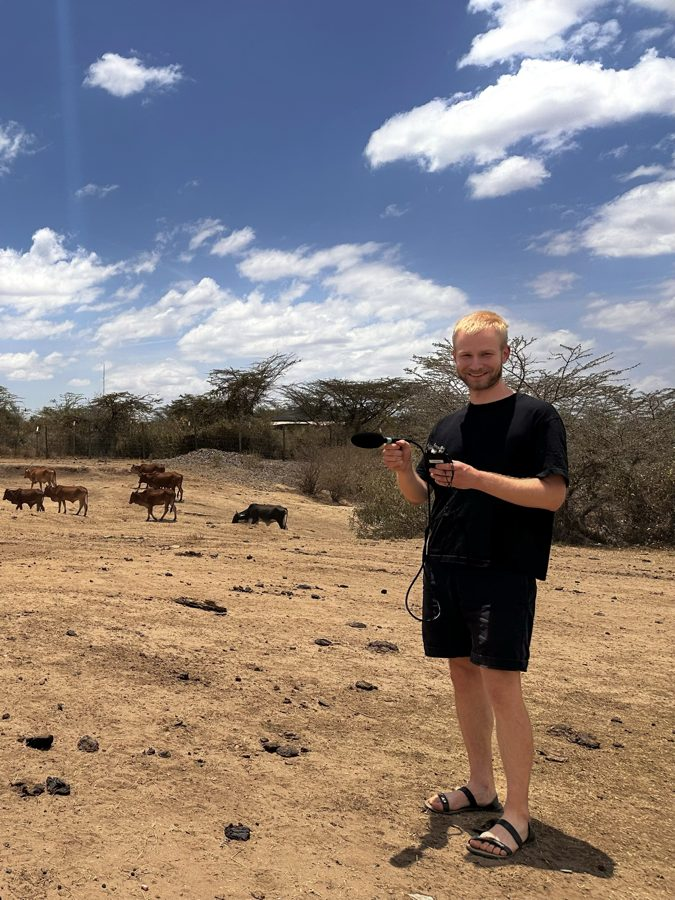

Marius Faiß
PhD student at the Max Planck Institute of Animal Behavior
I am interested in bioacoustics, which nicely combines my passions for all things audio and biology. Within this field, I have been lucky to learn about aspects of sound production and communication in very different groups of animals and scientific contexts.
In my PhD project, which is part of the EU-funded BioAcoustic AI Consortium, I study the dynamics and functions of vocal interactions in the Spotted Hyena by analyzing movement and audio data collected in the wild. I also explore machine-learning methods that are specifically suited to detect and analyse animal vocalisations from a broad range of species.
I am based at the Max Planck Institute of Animal Behavior in Konstanz, in the Department for the Ecology of Animal Societies, where I am part of the CoCoMo group led by Ariana Strandburg-Peshkin. The data I work with were collected through the collaborative CCAS project and the Mara Hyena Project.
- bioacoustics
- vocal communication
- animal behaviour
- machine learning


Publications
Papers
- Bioacoustic raw-audio transformer effectively and efficiently encodes mixed sample rate data Scientific Reports 16, 32067, 2026 doipdf
- A dataset of insect sounds from 459 species for bioacoustic machine learning Scientific Data, 2026 doi
- animal2vec and MeerKAT: A self-supervised transformer for rare-event raw audio input and a large-scale reference dataset for bioacoustics Methods in Ecology and Evolution 17(3), 2026 doipdf
- A list of sound producing European grasshoppers and the availability of their sounds in Xeno-canto Articulata 40, 2025 doipdf
- Dynamic upper vocal tract articulations during zebra finch song – acoustic effects and independence of instantaneous auditory feedback Journal of Experimental Biology 228(6), 2025 doi
- Adaptive representations of sound for automatic insect recognition PLOS Computational Biology 19(10), 2023 doi
- Tonality over a broad frequency range is linked to vocal learning in birds Proceedings of the Royal Society B 289(1982), 2022 doipdf
Preprints
- Greedy Volume Maximization of Gradient Embeddings for Long-Tailed Frame-Level Bioacoustic Active Learning arXiv:2607.13555, 2026 arxivpdf
Datasets
- InsectSet459: A large dataset for automatic acoustic identification of insects (Orthoptera and Cicadidae) Zenodo, 2025 doi
- InsectSet47 & InsectSet66: Expanded datasets for automatic acoustic identification of insects (Orthoptera and Cicadidae) Zenodo, 2023 doi
- InsectSet32: Dataset for automatic acoustic identification of insects (Orthoptera and Cicadidae) Zenodo, 2022 doi
Curriculum Vitae
Education
- Mar 2024 – present PhD, “Vocal interactions in animal groups”Max Planck Institute of Animal Behavior and University of Konstanz. Supervised by Ariana Strandburg-Peshkin. Funded by the EU-funded Marie Skłodowska-Curie Doctoral Network BioAcousticAI.
- 2020 – 2022 M.Sc. Evolutionary BiologyLeiden University. Research projects “Multimodal turn-taking in zebra finches” with Katharina Riebel & Avelyne Villain, and “Adaptive representations of sound for automatic insect recognition” with Dan Stowell at Naturalis Biodiversity Center.
- 2016 – 2020 B.Sc. Biosciences / Life SciencesUniversität Münster. Thesis “Does vocal learning facilitate dynamic and plastic upper vocal tract filtering of birdsong?”, including a four-week research stay at the University of Utah.


Experience
- Sep 2023 – Feb 2024 Freelance work for xeno-canto.orgFacilitating uploads of large, private Orthoptera sound collections to the public wildlife sound database. xeno-canto
- Apr – Sep 2023 Collaboration with CapgeminiDatasets and consultation for the annual GDSC hackathon (“GDSC2023, The Biodiversity Buzz”).
- Sep – Dec 2022 Naturalis Biodiversity CenterThree-month position funded by a Martin & Temminck Fellowship grant to publish Faiß & Stowell, 2023.
- 2017 – 2020 Student assistantInstitute for Cardiovascular Organogenesis and Regeneration, Medical Faculty, Universität Münster.
Talks
- 20 Jul 2026 “Assessing the role of vocal signals in regulating conflict during reunions in a fission-fusion society”Talk at ISBE 2026, Congress of the International Society for Behavioral Ecology, Turin.
- 1 Dec 2025 “Bioacoustics & AI – Exploring Animal Communication and Behavior with Advanced Tracking Methodology”Invited talk, ZHAW Institute of Computational Life Sciences (ICLS).